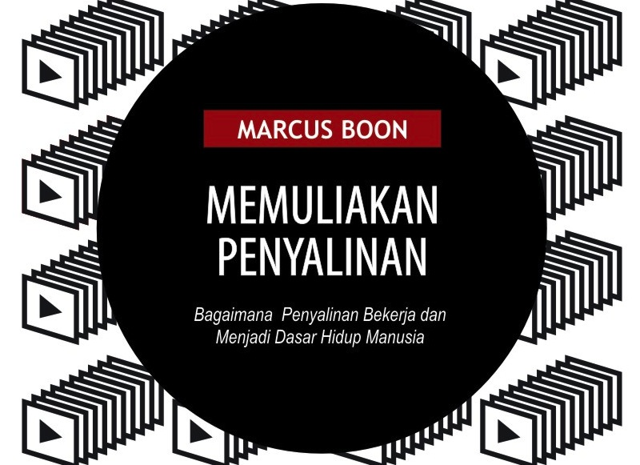
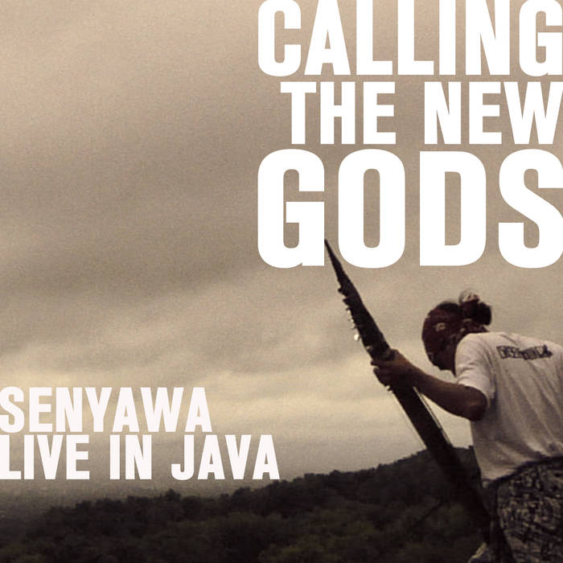

Sobat CCID
-
 15 Jan 2018
15 Jan 2018Tanya Jawab Sobat CCID: 03 Januari 2018
Pada twitter @ciptamedia, @elizavitri mengajukan pertanyaan tentang ketentuan lisensi Creative Commons: 1. Apakah karya yang dihasilkan dari hibah (cipta media ekspresi) harus menerapkan lisensi Creative Commons CC-BY 4.0? 2. Bagaimana...
Tags:
-
 10 Aug 2017
10 Aug 2017Album Musik Berlisensi CC BY-NC-SA di Laman Bandcamp: Orange Cliff Records, Sorge Records, dan Karma Records
Selain pada ranah fotografi, penggunaan lisensi Creative Commons juga populer dikalangan grup musik maupun penyanyi solo di Indonesia. Berdasarkan hasil penghitungan kami, per Oktober 2016, terdapat setidaknya 600 album musik...
Tags:
-
 6 Aug 2017
6 Aug 2017DOM 65 Rilis Ulang Album Mini “Oi! Ruck N’ Raw” Melalui Yes No Wave Netlabel (CC BY-NC-SA)
DOM 65 (Sumber: YNW) Setelah merilis satu album penuh dengan tembang-tembang baru pada tahun 2009 lalu, Unit punk rock asal Yogyakarta, DOM 65, bersama Yes No Wave Netlabel melakukan perilisan...
Tags:
-
14 Jul 2017
Parakosmos Untuk Netlabel Day Dari Bottlesmoker dan 4 rilisan dari Ripstore Asia!
Anggung Suherman (Angkuy) dan Ryan Adzani (Nobie) Tanggal 14 Juli 2017 lalu merupakan hari peringatan internet label (netlabel) sedunia. Untuk ikut serta merayakan hari tersebut, Bottlesmoker, proyek musik yang selalu...
Tags:
-
 11 Jul 2017
11 Jul 2017Belajar Menyunting di Wikipedia dengan Pedoman Penyuntingan Secara Manual dari Wikimedia Indonesia! (CC BY-Sa)
Sampul Modul Pelatihan Berkontribusi di Wikipedia. Wikipedia merupakan ensiklopedia bebas yang dapat disunting oleh siapapun. Sebagai kontributor, Wikipedia menyediakan dua model penyuntingan yakni model penyuntingan manual dan penyuntingan dengan visual...
Tags:
-
 9 Mar 2017
9 Mar 2017Kumpulan Infografis dari Remotivi (CC BY-NC-SA)
Remotivi merupakan sebuah pusat kajian media dan komunikasi yang berasal dari Jakarta. Lingkup kegiatan Remotivi meliputi penelitian, advokasi, dan penerbitan. Di ranah penerbitan Remotivi menerbitkan infografis-infografis menarik dari hasil kerja...
Tags:
-
 8 Mar 2017
8 Mar 2017Zoo akan melakukan tur keliling Eropa!
Zoo, berasal dari Yogyakarta, merupakan band eksperimental dengan karakter Indonesia yang kuat pada tembang-tembangnya. Band ini dengan konsisten mendistribusikan album-albumnya secara daring melalui Yes No Wave Music (YNW), sebuah internet...
Tags:
-
2 Mar 2017
Bottlesmoker – Þolarity (2017) berlisensi CC BY-NC-SA
Pada awal bulan Februari lalu duo elektronik asal Bandung, Bottlesmoker, kembali melepaskan karyanya secara gratis dan terbuka. Mini album mereka yang berjudul Þolarity ini didistribusikan secara daring oleh internet label...
Tags:
-
 19 Sep 2016
19 Sep 2016Wawancara Dengan Label Rekaman Kolibri
Kolibri Rekords merupakan label rekaman dari Jakarta yang dibentuk dan dikelola oleh Daffa Andika dan Ratta Bill Abaggi. Label rekaman ini mendistribusikan musik di dalam dan di luar jaringan. Dalam...
Tags:
-
 26 Aug 2016
26 Aug 2016Majalah Horison Akan Hadir di Wikimedia Commons Secara Bertahap
Rapat Tim Wikimedia Indonesia dan Creative Commons Indonesia bersama Tim Redaksi Majalah Horison, 11 Agustus 2016 Pada hari kamis (11/08/2016) lalu, tim Wikimedia Indonesia dan Creative Commons Indonesia bertemu dengan...
Tags:
-
 22 Aug 2016
22 Aug 2016Tanya Jawab Sobat CCID 13 Agustus 2016
Pada twitter Creative Commons Indonesia, @DinaDinotz mengajukan pertanyaan tentang hak cipta dan lisensi Creative Commons: Apakah Lisensi CC dapat digunakan untuk proyek foto berbayar saya? Kira-kira lisensi apa yang paling...
Tags:
-
2 Aug 2016
Tanya Jawab Sobat CCID 2 Agustus 2016
Pada facebook Creative Commons Indonesia, Biondy Alfian mengajukan pertanyaan tentang ketentuan “Penggunaan Wajar” di Indonesia: “Halo, Admin. Bagaimana ketentuan dan penerapan “Penggunaan Wajar” atau “Fair Use” di Indonesia? Apakah Creative...
Tags:
-
3 Jul 2016
Tanya Jawab Sobat CCID 2 Juli 2016
Pada twitter Creative Commons Indonesia, Rizky Luthfianto mengajukan pertanyaan tentang hak cipta dan Creative Commons: “Kita tidak boleh melepaskan hak cipta, tetapi apakah kita tetap bisa menyerahkan/memindahkan/mengalihkan hak cipta? Ketentuan...
Tags:
-
3 Jul 2016
Tanya Jawab Sobat CCID 30 Juni 2016
Pada facebook Creative Commons Indonesia, Edo W Adithyawarman bertanya mengenai lisensi Creative Commons: “Halo, saya Edo, mau tanya… Sejak tanggal 25 Juni kemarin, saya mulai menerjemahkan tulisan-tulisan Aaron Swartz dari...
Tags:
-
19 May 2016
KUNCI Publication menerbitkan buku Memuliakan Penyalinan dan Anonymous Writers Club dengan Lisensi CC BY-NC-SA
Sumber gambar KUNCI Publication, divisi penerbitan dari KUNCI Cultural Studies, menerbitkan dua buku yakni Memuliakan Penyalinan dan Anonymous Writers Club dengan lisensi CC BY-NC-SA. Buku Memuliakan Penyalinan merupakan karya Marcus...
Tags:
-
18 May 2016
Koleksi Petites Planètes Senyawa
Sumber gambar Senyawa adalah duo Wukir Suryadi dan Rully Shabara yang terbentuk dan berasal dari Yogyakarta. Grup ini terbentuk lewat pertemuan mereka di atas panggung pada tahun 2010, yang diikuti...
Tags:
-
15 Oct 2012
Tanya Jawab Sobat CCID 4 Oktober 2012
Pada facebook Creative Commons Indonesia, Ridhani Agustama bertanya mengenai lisensi Creative Commons: “Bedanya lisensi Creative Commons dengan All Right Reserved gimana ya mas? Jadi gini, ada band temen Afternoon Coffee...
Tags:
-
21 Sep 2012
Tanya Jawab Sobat CCID 16 September 2012
Pada facebook Creative Commons Indonesia, Didi Prambadi dari www.belajargratis.org bertanya untuk lisensi Creative Commons : “Dear rekan2 Creative Commons Indonesia, kami dari www.belajargratis.org bermaksud mendaftarkan situs kami agar dapat lisensi...
Tags:
-
 25 May 2012
25 May 2012Bottlesmoker menjadi Pilihan Editor Rolling Stone 2012
Bottlesmoker adalah salah satu Sobat CC kategori musik, yaitu pengguna lisensi CC dalam penyebarluasan ciptaan musik yang mereka miliki. Dalam kurun waktu 7 tahun, Bottlesmoker telah berhasil menggelar konser di...
Tags:
-
18 Apr 2012
Prof. Eko Indrajit: 7 books with CC license
Prof. Eko Indrajit has published seven books under CC BY-NC-SA 3.0 Unported license. One of his book, titled Teknologi Informasi dan Perguruan Tinggi: Menjawab Tantangan Pendidikan Abad ke-21, talks about...
Tags:
-
 17 Apr 2012
17 Apr 2012Laporan tentang Situasi Hak Asasi Manusia di Indonesia tahun 2011 dari ELSAM telah disebarluaskan dengan lisensi CC-BY
ELSAM (Lembaga Studi dan Advokasi Masyarakat) adalah organisasi berbentuk perkumpulan untuk penelitian dan advokasi kebijakan terkait hak asasi manusia di Indonesia. Pada bulan Januari 2012, ELSAM memublikasikan laporan terkini terkait...
Tags:
-
8 Mar 2012
Laporan mengenai Kebijakan Media & Industri Media di Indonesia Kontemporer telah Terbit dengan Lisensi CC
Hak Bermedia (Media Rights) adalah sebuah proyek yang didukung oleh Asosiasi Jurnalis Independen (AJI), Bengawan (Solo), ICT Watch, dan Jurnal Celebes untuk memetakan kondisi ekonomi politik media di Indonesia serta...
Tags:
-
 7 Mar 2012
7 Mar 2012Situs Yayasan Kajian Budaya KUNCI dengan CC BY-NC-SA 3.0
KUNCI Cultural Studies Center / CC BY-NC-SA 3.0 KUNCI Cultural Studies Center adalah lembaga non-profit dan independen yang didirikan di Yogyakarta, Indonesia, pada tahun 1999 dan bekerja untuk mengembangkan masyarakat...
Tags:
-
 5 Mar 2012
5 Mar 2012Buku Gratis dengan Lisensi CC: HAM sebagai Bahasa Perdamaian
Lembaga Studi dan Advokasi Masyarakat (ELSAM) adalah organisasi advokasi kebijakan di Indonesia yang memperjuangkan hak asasi manusia, baik hak sipil-politik maupun hak ekonomi, sosial, dan budaya secara tak terpisahkan. Kegiatan...
Tags:
-
 29 Feb 2012
29 Feb 2012Terjemahan Buku "Budaya Bebas" dari Lawrence Lessig dalam Bahasa Indonesia
Pada tanggal 25 Februari 2012, salah satu kegiatan pada Jagongan Media Rakyat 2012 adalah bedah buku Free Culture: How Big Media Uses Technology and the Law to Lock Down Culture...
Tags:
-
16 Feb 2012
Indonesian netlabel @valetnarecords with CC BY-NC-SA license
Valetna Records is a record label from Semarang, Jawa Tengah, Indonesia. Valetna Records released singles from various artists and genre, under CC BY-NC-SA 3.0 license. Thus, before submitting your works...
Tags:
-
 13 Feb 2012
13 Feb 2012Indonesian metal band, Screaming of Soul, releases album under CC BY-NC-ND
Screaming of Soul / Valetna Records / CC BY-NC-SA 3.0 Screaming of Soul is a band with metalcore post screamo genre from Semarang, Indonesia. Screaming of Soul consists of Jonathan...
Tags:
-
15 Dec 2011
@icjrid: Access to Information in District Court of South Jakarta
Institute for Criminal Justice Reform (ICJR) has published a briefing paper regarding access to information in the District Court of South Jakarta (Pengadilan Negeri Jakarta Selatan). This briefing paper was...
Tags:
-
 14 Dec 2011
14 Dec 2011Institute for Criminal Justice Reform (@icjrid) website with CC license
Institute for Criminal Justice Reform (ICJR) is a non profit organization working for law and criminal justice reform in Indonesia. ICJR is supporting the transformation of law and the criminal...
Tags:
-
13 Dec 2011
Alphabetajournal.com (@ab_journal): open your mind, share your thoughts!
Alphabetajournal.com is an open authorship site are made based on the thought that everyone is entitled to obtain and share knowledge, art and literature for free. This site has been...
Tags:
-
2 Dec 2011
inmyroom.us and yesnowave.com: Indonesian netlabel websites with CC licenses
Two Indonesian netlabels are using CC licenses in their websites. inmyroom.us is using CC BY-NC-ND unported license while yesnowave.com is using CC BY-NC-SA unported license for all materials and they...
Tags:
-
8 Nov 2011
Rapper Indonesia, @pandji, menerapkan lisensi CC pada albumnya yang berjudul "Merdesa"
Pada tahun 2010 Pandji Pragiwaksono menerbitkan album musiknya yang berjudul “Merdesa” dengan lsiensi CC BY-NC-SA. Dengan menerapkan lisensi ini Pandji memperbolehkan pengguna ciptaannya untuk membuat ciptaan turunan dari album tersebut,...
Tags:
-
 1 Nov 2011
1 Nov 2011Bottlesmoker menggunakan lisensi CC pada karya musiknya
Bottlesmoker di Launching Yamaha Mio Fino Indonesia, foto oleh: emonemomen | CC BY 2.0 Bottlesmoker telah menerbitkan karya-karyanya yang berlisensi CC dalam rangka mendukung gerakan berbagi musik gratis. Mereka menerapkan...
Tags: